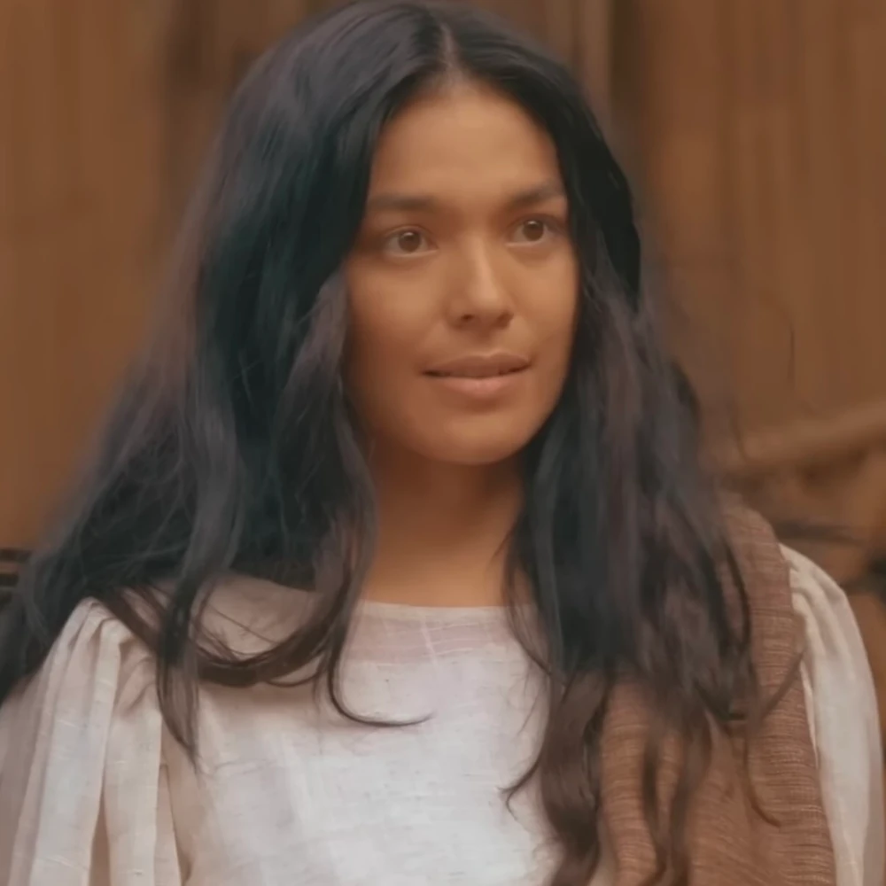
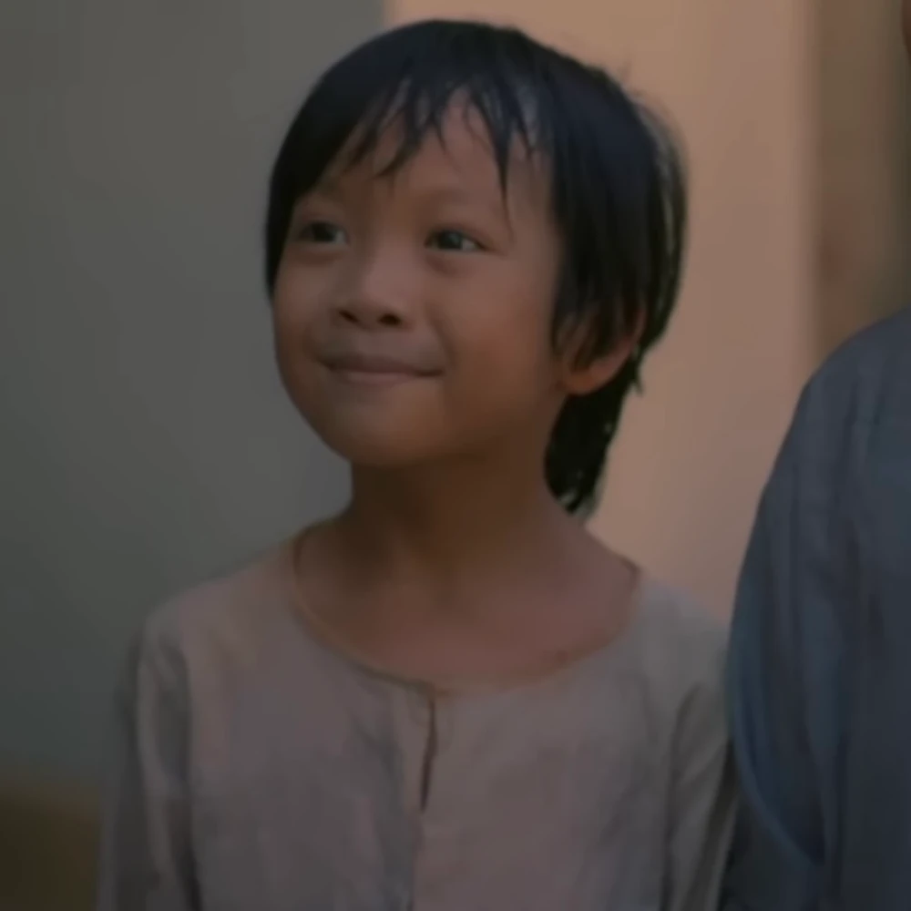
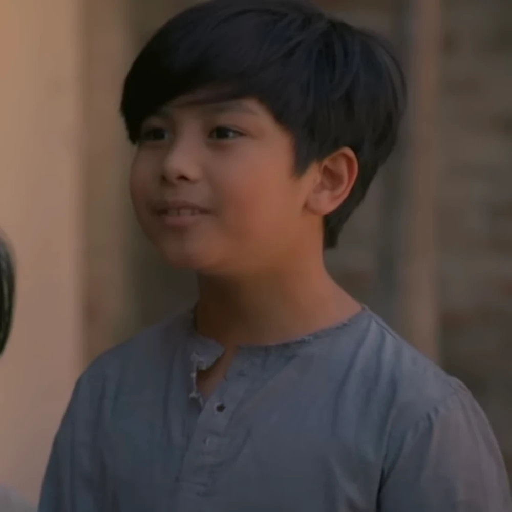

C h a r a c t e r s i n N o l i M e T a n g e r e
|
| Picture |
Character |
Description |

|
Crisostomo Ibarra |
- Full name: Juan Crisostomo Ibarra y Magsalin
- Main character of Noli Me Tangere.
- Son of Don Rafael Ibarra.
- Studied in Europe for 7 years.
- Wants to reform the Philippines
for the benefit of the Filipinos.
|

|
Maria Clara |
- Love interest of Crisostomo Ibarra.
- Is believed to be the daugther of Kapitan Tiago
but is actually the daugther of Padre Damaso.
- Joined the seminary to study.
- She is the representation of the ideal woman.
|
|
|
Elias |
- Friend of Crisostomo Ibarra.
- Has seen the abuse that Filipinos have suffered
at the hands of the Spaniards. As such wants
to reform the government like Crisostomo does
|

|
Kapitan Tiago |
- A Wealthy Filipino.
- Friends of both Don Rafael and Padre Damaso.
- Extremely religious person.
- Thought to be the "father" of Maria Clara
but it is actually Padre Damaso.
|

|
Padre Damaso |
- A Spaniard and a Franciscan priest
- Transfered away from San Diego
- Does not like the Ibarra family and
framed Don Rafael, causing his death.
- Is the true father of Maria Clara
- Has violent tendencies
|

|
Padre Salvi |
- Replaced Padre Damaso as Priest of San Diego.
- Thin and Sickly.
- Likes giving punishments to others
|

|
Don Rafael Ibarra |
- Father of Crisostomo Ibarra
- Richest person in San Diego
- Was framed by Padre Damaso
for killing a tax collector and died in jail
|

|
Pilosopo Tasyo o Don Anastacio |
- Is a philosopher
- Did not finish school as her mother was afraid
that he would "forget"" about God due to how smart he was.
- He was given a choice between stopping his studies or
work in the church and he chose to stop his studies
|
|

|
Sisa |
- Mother of Crispin and Basilio.
- She went crazy after Crispin and Basilio went missing.
- Was originally a rich person but gave up that
for her husband, Pedro.
- Represents the Philippines, with Pedro being the
colonizers and Basilio and Crispin being the Filipinos.
|
|

|
Crispin |
- Son of Sisa and younger brother of Basilio.
- Worked as a sacristan.
- Was framed for stealing 2 onsa (32 pesos) by the
Sacristan Mayor. As a result, he and Basilio were stopped
from leaving until they payed it back.
- Represents the Filipinos that were framed by the Spaniards.
|
|
 |
Basilio |
- Son of Sisa and older brother of Crispin.
- Worked as a sacristan.
- He was forced to stay in the church
until he and his brother, Crispin, payed
back what they "owed" to the Sacristan Mayor.
- Ran away from the church after
they refused to let them leave.
|

|
Donya Victorina De Espadaña |
- Wife of Don Tiburcio
- Is obsessed with Spaniards and she is ashamed
for being a Filipino. She hides this by
putting on makeup to look more Spanish
- Rejected all her suitors because they were not Spanish,
she later married Don Tirbucio (a Spaniard)
|
 |
Don Tiburcio De Espadaña |
- Husband of Donya Victorina
- Was a customs employee and is a scammer,
offering expensive doctor services
despite having no medical training
|
 |
Donya Consolacion |
- Wife of Alperes
- Likes using makeup
(although she isn't very good at using it)
- Was poor before marrying Alperes
|
 |
Alperes |
- Head of the military
- Violent and cruel
- Takes out his anger on the guards/soldiers
- Husband of Donya Consolacion
|
 |
Tiya Isabel |
- Acted as Maria Clara's mother during her childhood
- Raised Maria Clara and is one of her guardians
- Cousin of Kapitan Tiago
|